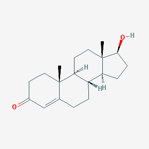

Testosterone
- Formation Testosterone is derived from cholesterol. The oxidative cleavage of the side-chain of cholesterol by cholesterol side-chain cleavage enzyme,gives pregnenolone. In the next step, two additional carbon atoms are removed by the CYP17A1 enzyme in the endoplasmic reticulum to yield a variety of C19steroids. In addition, the 3beta-hydroxyl group is oxidized by 3beta-hydroxysteroid dehydrogenase to produce androstenedione. Lastly the C17 keto group androstenedione is reduced by 17beta-hydroxysteroid dehydrogenase to yield testosterone.
- Structure

- Effects Testosterone helps build muscle in users by binding to an androgen receptor. Once it has bonded it formulates a signal transduction pathway that leads to the expression of proteins needed to build muscle.
- Detection Testosterone can be detected in urine using liquid chromatography and gas spectroscopy, methods used to discover other steroids. The only problem with this method is that it is hard to differentiate between natural testosterone and artificial testosterone. To avoid this, one can tell if someone is doping via testosterone by checking the amount of testosterone present.